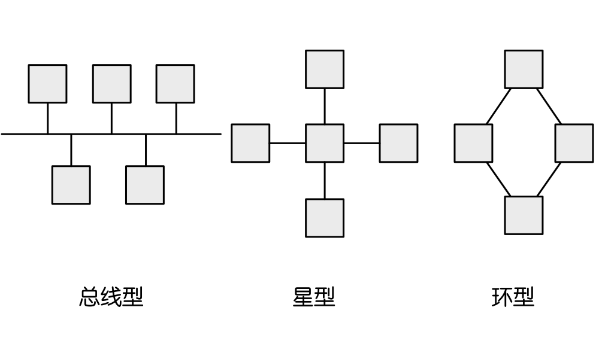

| 层次 | 名称 | 主要功能 | 主要设备及协议 |
| 7 | 应用层 | 实现具体的应用功能 | POP3、FTP、HTTP、Telnet、SMTP、DHCP、TFTP、SNMP、DNS |
| 6 | 表示层 | 数据的格式与表达、加密、压缩 | |
| 5 | 会话层 | 建立、管理和终止会话 | |
| 4 | 传输层 | 端到端的连接 | TCP、UDP |
| 3 | 网络层 | 分组传输和路由选择 | 三层交换机、路由器、ARP、RARP、IP、ICMP、IGMP |
| 2 | 数据链路层 | 传输以帧为单位的信息 | 网桥、交换机、网卡、PPTP、L2TP、SLIP、PPP |
| 1 | 物理层 | 二进制传输 | 中继器、集线器 |
备注：
中继器：传递信息的设备
集线器：拥有多端口的数据传输设备
网桥：连接两个同类型网络的设备
例：某IP网络连接如图所示，在这种配置下IP全局广播分组不能通过的路径是___
A. P~Q B. P~S
C. Q~R D. S~T
解：
A:P~Q之间使用网桥（属于第二层）可以传播
B:P~S之间使用路由器（属于第三层）不可以传播
C:Q~R之间使用集线器（属于第一层）可以传播
D:S~T之间使用交换机（属于第二层）可以传播
因此选B
Internet，可扩展，可靠，应用最广，牺牲速度和效率
| TCP/IP层级 | OSI/RM层级 | 协议 |
| 应用层 | 应用层 | POP3、FTP、HTTP等 |
| 表示层 | ||
| 会话层 | ||
| 传输层 | 传输层 | TCP、UDP |
| Internet层 | 网络层 | IP、ICMP、IGMP、ARP、RARP |
| 网络接口层 | 数据链路层 | 以太网、令牌环、帧中继、ATM |
| 物理层 |
ICMP
因特网控制协议（检测网络是否通畅）
ARP
用于将IP地址转换成物理地址
RARP
用户将物理地址转换成IP地址
TCP
可靠协议，通信时建立连接，建立在有验证机制的基础上
在建立通信时会有三次握手的操作：
1.A给B发送请求
2.B给A发送请求许可
3.A给B发送收到许可
基于TCP的协议：
1.POP3（邮件传输协议）
2.FTP（文件传输协议）
3.HTTP（超文本传输协议）
4.Telnet（远程登陆）
5.SMTP（邮件传输协议）
UDP
不可靠协议，通信时不建立连接，只是将目的地址发送到发送地址
基于UDP的协议:
1.DHCP（动态IP地址分配协议）
2.TFTP（小文件传输协议和FTP可靠性差别）
3.SNMP（简单网络管理协议）
4.DNS（域名解析协议）
主机host1对host2进行域名查询的过程如下图所示，下列说法正确的是
A.根域名服务器采用迭代查询，中介域名服务器采用递归查询
B.根域名服务器采用递归查询，中介域名服务器采用迭代查询
C.根域名服务器和中介域名服务器都采用迭代查询
D.根域名服务器和中介域名服务器都采用递归查询
解：选A，因为根域名服务器没有查找其他的域名服务器
其它协议
Samba、CIFS、NFS：都是文件共享协议
其中Samba可以跨平台
NOVELL，路由，大型企业网
IBM，非路由，快速
计算机网络分类按照分布范围分类可以分为局域网(LAN)，城域网(MAN)，广域网(WAN)和因特网
按照拓扑结构分类可以分为总线型，星型和环型

星型存在单点故障问题（如果中心故障，那么整体会瘫痪）
环型在可靠性有一定优势，任何一个节点出故障不会瘫痪
网络规划的原则：
1.实用性原则
2.开放性原则（有统一的标准）
3.先进性原则（不使用濒临淘汰的设备）
网络设计的原则：
1.可用性
2.可靠性
3.可恢复性
4.适应性
5.可伸缩性
| 类别 | 点分十进制 | 二进制 | |
| A类 | 最低 | 0.0.0.0 | 00000000 00000000 00000000 00000000 |
| 最高 | 127.255.255.255 | 01111111 11111111 11111111 11111111 | |
| B类 | 最低 | 128.0.0.0 | 10000000 00000000 00000000 00000000 |
| 最高 | 191.255.255.255 | 10111111 11111111 11111111 11111111 | |
| C类 | 最低 | 192.0.0.0 | 11000000 00000000 00000000 00000000 |
| 最高 | 223.255.255.255 | 11011111 11111111 11111111 11111111 | |
| D类 组播 |
最低 | 124.0.0.0 | 11100000 00000000 00000000 00000000 |
| 最高 | 239.255.255.255 | 11101111 11111111 11111111 11111111 | |
| E类 保留 |
最低 | 124.0.0.0 | 11110000 00000000 00000000 00000000 |
| 最高 | 255.255.255.255 | 11111111 11111111 11111111 11111111 |
注意上表中划线部分为网络号，剩余的是主机号
注意可用性！：
主机号不能全0（表示本地网络号，无意义）和全1（表示广播）
因此A类地址可容纳主机个数为224-2个地址
B类地址可容纳主机个数为216-2个地址
C类地址可容纳主机个数为28-2个地址
例：将B类IP地址168.195.0.0划分为27个子网，子网掩码是多少？
解：
将IP地址转换为二进制地址：
10101000 11000011 00000000 00000000
16<27<32
则需要取5位子网掩码(2的5次方)
即子网掩码为：
11111111 11111111 11111000 00000000
十进制为255.255.248.0
注意下面是另外一题例：将B类IP地址168.195.0.0划分为若干子网，每个子网内有主机700台，子网掩码为多少
解：2^k-2≥700
求的k最小为10
IP地址转换为二进制为：
10101000 11000011 00000000 00000000
需要子网掩码：
11111111 11111111 111111000000
（需要剩下6个0）
十进制为255.255.252.0
例：分配给某公司网络的地址快是210.115.192.0/20，该网络可以被划分为___个C类子网
C类一共有24位网络号，那么使用了20位之后，可以划分的就是2^4=16个C类子网
| IP | 说明 |
|---|---|
| 127网段 | 回播地址 |
| 网络号全0地址 | 当前子网中的主机号 |
| 全1地址 | 本地子网广播号 |
| 主机号全1地址 | 特定子网的广播 |
| 10.0.0.0/8 | 不在公网使用 |
| 172.16.0.0/12 | 不在公网使用 |
| 192.168.0.0/16 | 不在公网使用 |
| 169.254.0.0 | 保留地址，用于DHCP失效 |
| 0.0.0.0 | 保留地址，用于DHCP失效 |
| 标签 | 功能 |
|---|---|
| <a> | 定义锚 |
| <b> | 粗体 |
| <body> | 文档主体 |
| <button> | 按钮 |
| <center> | 居中文本 |
| <col> | 表格中一个或多个列属性 |
| <font> | 定义文本字体、尺寸和颜色 |
| <from> | HTML表单 |
| <frame> | 框架集窗口或框架 |
| <h1> | HTML标题 |
| <hr> | 水平线 |
| <html> | HTML文档 |
| <img> | 定义图像 |
| <p> | 定义段落 |
| <script> | 定义客户端脚本 |
| <strong> | 强调文本 |
| <table> | 定义表格 |
| <td> | 表格单元 |
| <tr> | 表格行 |
| <title> | 定义文档标题 |
无线网的优势：移动性、灵活性、成本低、容易扩充
分类：
无线局域网（WLAN，802.11，Wi-Fi）
无线城域网（WMAN，802.16，WiMax）
无线广域网（WWAN，3G/4G/5G）
无线个人网（WPAN，802.15，Bluetooth/Zigbee）
IPv6是设计用于替代现行版本IP协议（IPv4）的下一代IP协议
IPv6的特点：
1.IPv6地址长度128位，地址增大了296倍
2.灵活的IP报文头部格式
3.简化了报文头部格式，提高吞吐量
4.提高安全性，增加了身份认证和隐私权
5.支持更多的服务类型
6.允许协议继续演化
IPv6地址类别：
单播地址：单个接口的标识符
任播地址：泛播地址。一组接口的标识符，IPv4广播地址
组播地址：IPv6组播和IPv6中的组播类似